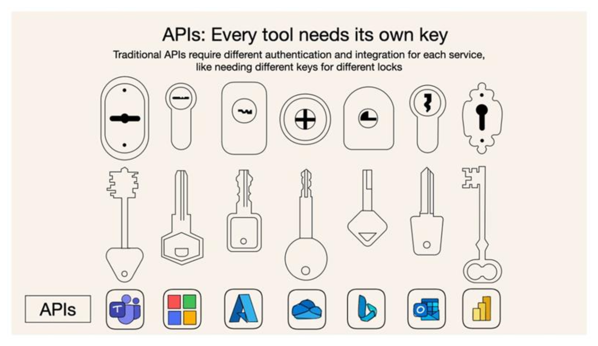
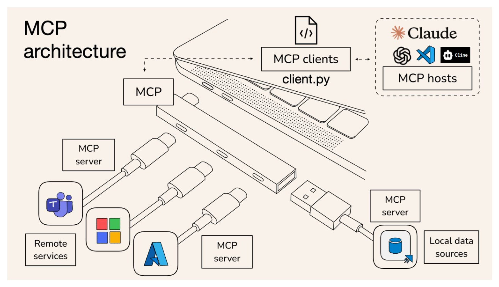
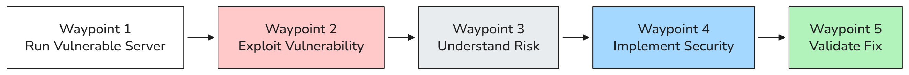
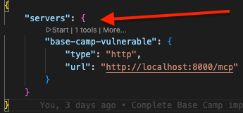
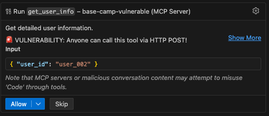
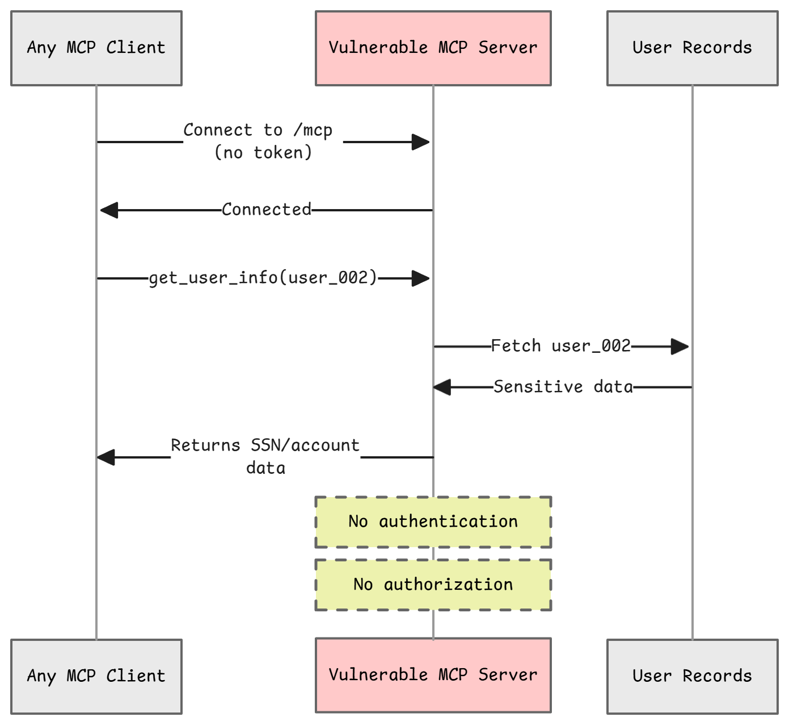
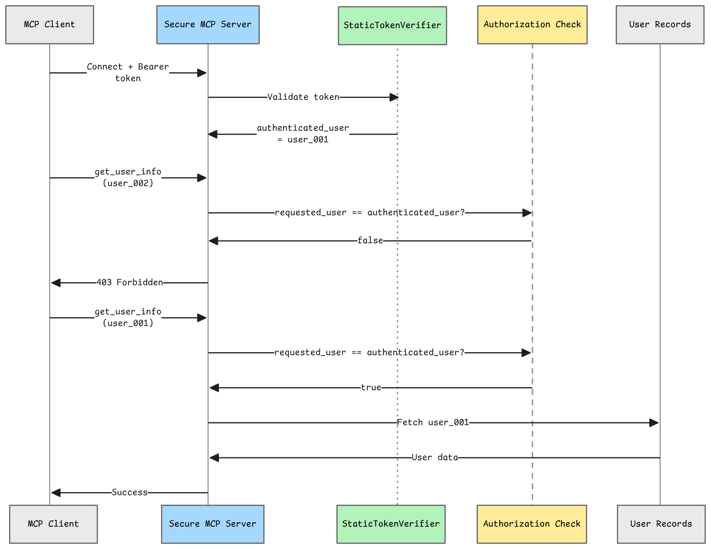

Welcome to Base Camp, the foundation of your MCP security journey. Before we ascend to the higher camps where we'll tackle production-grade security patterns, we need to establish a solid foundation. Just as mountaineers acclimatize at base camp before attempting the summit, you'll start here by understanding what MCP is, why it needs security, and experiencing firsthand what happens when security is absent.
This camp introduces you to the "vulnerable → exploit → fix → validate" methodology that you'll use throughout the entire workshop series. You'll run an intentionally vulnerable MCP server, exploit it to see the real-world impact, implement a basic security fix, and validate that the fix works. By the end of Base Camp, you'll have hands-on experience with MCP security fundamentals and be ready for the advanced patterns in the camps ahead.
Camp Details
What is the Model Context Protocol (MCP)?¶
The Model Context Protocol (MCP) is an open standard for connecting AI applications to data sources and tools. It provides a common communication protocol so any AI system can work with any data source, without requiring custom integrations for each combination.
Why does this matter for security? Because MCP servers often expose sensitive operations, such as reading user data, executing commands, and accessing internal systems. If these servers lack proper authentication and authorization, anyone who can connect to them can access everything they expose.

Learn More
- Introduction to MCP — Official MCP documentation
- MCP Security Guidance — OWASP MCP Azure Security Guide
MCP Architecture¶
At its core, MCP connects AI applications (like VS Code or Claude Desktop) to data sources and tools (like databases, APIs, and file systems). The protocol sits in the middle, enabling bidirectional communication so AI applications can discover capabilities and invoke them on demand.

In this workshop, you'll work with both the AI applications that consume MCP and the MCP servers that expose data and tools — learning where security risks emerge at each layer and how to address them.
- AI Applications: VS Code, and other clients, connect to MCP servers to discover and invoke capabilities
- MCP Servers: We'll run both vulnerable and secure servers that expose user data
- The Risk: If the MCP server has no authentication, any client can connect and access all data
Prerequisites¶
Before starting Base Camp, ensure you have the required tools installed.
Prerequisites Guide
See the Prerequisites page for detailed installation instructions and troubleshooting.
Quick checklist for Base Camp:
- Python 3.10+
- uv (Python package installer)
- VS Code with GitHub Copilot (recommended for exploitation scenarios)
Clone the Workshop Repository¶
Setup Python Environment for Base Camp¶
Note
If uv is not recognized after installing, you may need to open a new terminal window so that the updated PATH is picked up.
The Ascent¶

Now it's time to begin your climb. Each waypoint below builds on the previous one, guiding you from vulnerability discovery to validated security fixes. You'll experience MCP security vulnerabilities firsthand, understand their impact, implement fixes, and verify your solutions work.
Start with Waypoint 1 and work through each waypoint in order. By the end, you'll have completed the full "vulnerable → exploit → fix → validate" cycle.
Waypoint 1: Run Vulnerable Server
Start the Vulnerable MCP Server¶
You should see:
🏔️ Base Camp - Vulnerable MCP Server (Streamable HTTP)
======================================================================
Server Name: Base Camp Vulnerable Server
Available Resources: 3 user records
Listening on: http://0.0.0.0:8000
⚠️ WARNING: This server has NO AUTHENTICATION!
Anyone on the network can access ANY user's sensitive data via HTTP.
🚨 OWASP MCP07: Insufficient Authentication & Authorization
🚨 OWASP MCP01: Token Mismanagement & Secret Exposure
======================================================================
The server is now running and ready to be exploited. Proceed to Waypoint 2 to test the vulnerability.
Waypoint 2: Exploit the Vulnerability
Choose Your Exploitation Method¶
All three methods below demonstrate the same vulnerabilities: OWASP MCP07 (Insufficient Authentication & Authorization) and MCP01 (Token Mismanagement & Secret Exposure). Choose the approach that matches your learning style, or try multiple methods to see the vulnerability from different perspectives.
Choose one path:
- Method 1: Automated Test Script - Fastest way to see every exploit and result in one run.
- Method 2: MCP Inspector - Best for visual, hands-on protocol exploration.
- Method 3: VS Code with GitHub Copilot Agent - Closest to a real AI-agent exploitation scenario.
Method 1: Automated Test Script
Best for: Developers who want to see comprehensive test results quickly
Run the provided exploit script to demonstrate all vulnerabilities:
This automated script uses FastMCP Client to perform 6 comprehensive exploit tests:
- :white_check_mark: Enumerate Tools - Connect without authentication and list available tools
- :warning: Attempt Resource Enumeration - Try to list resources (server doesn't expose list, but resources ARE accessible)
- :fire: EXPLOIT - Access user_001 (Alice Johnson) data without authentication
- :fire: EXPLOIT - Access user_002 (Bob Smith) data without authorization
- :fire: EXPLOIT - Access user_003 (Carol Williams) data without authorization
- :fire: EXPLOIT - Read resources directly via user:// URIs
Security Impact
The script demonstrates:
- No authentication required to connect
- No authorization checks on tool calls
- Complete data breach of all user accounts
- Access to sensitive data (SSN, balance, email)
- Key point: Even accessing user_001 is a breach because there's no identity verification!
Result: All 6 exploits succeed, confirming OWASP MCP07 and MCP01 vulnerabilities!
Method 2: MCP Inspector
Best for: Visual learners who want to explore interactively
Option A: Server already running (from Waypoint 1)
If your vulnerable server is still running from Waypoint 1, just launch MCP Inspector:
Option B: Start both server and inspector together
If you stopped the server or skipped Waypoint 1, this script launches both:
Either way, MCP Inspector opens a browser with an interactive MCP testing interface. Perfect for:
- Visual exploration of resources
- Interactive tool calling
- Understanding MCP protocol messages
- No code required!
Step-by-Step Exploitation¶
- Set the server URL: In the MCP Inspector interface, enter
http://127.0.0.1:8000/mcp(orhttp://localhost:8000/mcp) - Select transport type: Choose "Streamable HTTP" from the transport dropdown
- Click "Connect" - Notice: No authentication required! ⚠️
- Open Tools menu: Click "Tools" in the menu bar to see available tools
- Call the tool: Select
get_user_infoand provide auser_idparameter
Test: Access User Data¶
Call the get_user_info tool with user_id: "user_002":
{
"name": "Bob Smith",
"email": "bob@example.com",
"ssn_last4": "5678",
"account_balance": "$8,500.00"
}
Security Breach
You successfully retrieved sensitive user data without providing any credentials. This demonstrates how easily unsecured MCP servers can be exploited.
Try more exploits:
- Access different users:
user_001,user_002,user_003 - Notice: Everything is accessible without proving who you are!
Method 3: VS Code with GitHub Copilot Agent
Best for: Understanding real-world AI agent exploitation scenarios
Use VS Code's built-in MCP support to see how an AI agent can exploit the vulnerability:
Step 1: Configure the MCP Server¶
The repository includes .vscode/mcp.json which is already configured to connect to the vulnerable server at http://localhost:8000/mcp.
Step 2: Connect to the Server¶
- Open this repository in VS Code
- Make sure the vulnerable server is running (from Waypoint 1)
- Open the
.vscode/mcp.jsonfile - Look for the "Start" button that appears above the
base-camp-vulnerableserver configuration - Click Start to connect to the server

Once connected, you'll see the server status change and the number of tools discovered listed.
Step 3: Switch to Agent Mode¶
Open the chat dialog and select "Agent" mode along with a model like Claude Opus 4.6.
Step 4: Exploit via Agent Prompt¶
In the Copilot Agent chat, enter this prompt:
The agent will automatically:
- Discover the available tool
- Call
get_user_infowithuser_id: "user_002" - Display Bob Smith's sensitive data without any authentication
Permission Prompt
You may be prompted to allow the tool execution. Click "Allow" to proceed.

Try more exploits via Agent mode using these prompts:
Get information for user_001 from base-camp-vulnerableUse base-camp-vulnerable to show me user_003's data
Waypoint 3: Understand the Risk

What Just Happened?¶
You successfully exploited OWASP MCP07 (Insufficient Authentication & Authorization) and MCP01 (Token Mismanagement & Secret Exposure).
The Vulnerability
- The MCP server has NO authentication mechanism
- ANY client can connect and access ANY resource
- There's no code checking WHO is making the request
- Both the resource handler and tool are completely open
- Any client that can reach the server can call these functions with any
user_idand retrieve sensitive data
Real-World Impact¶
| Impact Area | Consequence |
|---|---|
| Data Breach | Unauthorized access to sensitive user information |
| Compliance | GDPR, HIPAA, PCI-DSS violations |
| Reputation | Customer trust destroyed |
| Financial | Fines, legal fees, remediation costs |
Code Review: Where's the Vulnerability?¶
Let's examine the vulnerable code to understand exactly what went wrong.
File: vulnerable-server/src/server.py
#VULNERABILITY: No authentication check!
@mcp.resource("user://{user_id}")
async def get_user_resource(user_id: str) -> str:
"""
🚨 VULNERABILITY: No authentication check!
Anyone on the network can access this HTTP endpoint
and retrieve any user's sensitive data.
"""
user = USERS.get(user_id)
if not user:
raise ValueError(f"User {user_id} not found")
return f"""Name: {user['name']}
Email: {user['email']}
SSN: ***-**-{user['ssn_last4']}
Balance: ${user['balance']:,.2f}
⚠️ WARNING: This data was accessed without authentication via HTTP!"""
Waypoint 4: Implement Security

Switch to Secure Server¶
Stop the vulnerable server first by pressing ctrl+c in the terminal where it's running.
Configure Authentication Token¶
# Copy example environment file
cp .env.example .env
# The default token is: workshop_demo_token_12345
# You can customize it by editing .env if desired
Start the Secure Server¶
You should see:
🏔️ Base Camp - Secure MCP Server (Streamable HTTP)
======================================================================
Server Name: Base Camp Secure Server
Available Resources: 3 user records
Listening on: http://0.0.0.0:8001
✅ AUTHENTICATION ENABLED
Required token: workshop_demo_token_12345
All requests must include valid Bearer token
✅ AUTHORIZATION ENABLED
Users can only access their own data (user_001)
======================================================================
Test With MCP Inspector¶
- Open MCP Inspector in a new terminal:
npx @modelcontextprotocol/inspector - In the MCP Inspector web interface, change the server URL to
http://localhost:8001/mcp - Click "Connect" - you should get an authentication error (401 Unauthorized)
-
Add the authentication header:
- Click to add a custom header
- Header Name:
Authorization - Header Value:
Bearer workshop_demo_token_12345 - Important: Enable the toggle button to the left of the header!
-
Click "Connect" again - now it succeeds!
Test the Security
Use the Tools menu in MCP Inspector to test authorization:
- Call
get_user_infotool withuser_id: user_001- should work (your own data) - Call
get_user_infotool withuser_id: user_002- should fail (403 Forbidden) - Call
get_user_infotool withuser_id: user_003- should fail (403 Forbidden)
Waypoint 5: Validate the Fix
Automated Testing¶
Run the secure server test script:
The test script uses FastMCP Client (fastmcp.client.Client) with BearerAuth to programmatically test the secure server.
The script validates:
- Test 1: Connection WITH token succeeds (user_001 can access own data)
- Test 2: Connection WITHOUT token fails (401 Unauthorized)
- Test 3: Invalid token is rejected (401 Unauthorized)
- Test 4: Authorization prevents accessing other user's data (user_002, user_003)
- Test 5: Resource access requires authentication.
Expected output when all tests pass:
======================================================================
📊 SECURITY TEST SUMMARY
======================================================================
Tests Passed: 5/5
🎉 SUCCESS! All security fixes validated!
🔒 Security Improvements Confirmed:
✅ Authentication - Bearer token required for all API access
✅ Authorization - Users can only access their own data
✅ Token Validation - Invalid tokens are rejected
✅ Unauthenticated Access - Blocked by default
✅ Resource Protection - Authentication required for all resources
======================================================================
Code Review: How Was It Fixed?¶
Open secure-server/src/server.py and examine the key changes:
1. FastMCP Built-in Authentication¶
from fastmcp.auth import StaticTokenVerifier
# Define authentication using FastMCP's built-in verifier
auth = StaticTokenVerifier(
tokens={
REQUIRED_TOKEN: {
"client_id": "user_001",
"scopes": ["read", "write"]
}
}
)
# Create MCP server with authentication enabled
mcp = FastMCP("Base Camp Secure Server", auth=auth)
2. Authorization Helper Function¶
def check_authorization(requested_user_id: str, authenticated_user: str) -> bool:
"""Verify user can only access their own data"""
return requested_user_id == authenticated_user
3. Secure Tool with Context¶
@mcp.tool()
async def get_user_info(ctx: Context, user_id: str) -> dict:
"""Get detailed user information - NOW WITH SECURITY!"""
# Get authenticated user from context
authenticated_user = get_authenticated_user(ctx)
# ✅ Authorization check
if not check_authorization(user_id, authenticated_user):
raise PermissionError(
f"Forbidden: You are authenticated as {authenticated_user} but "
f"cannot access {user_id}'s data."
)
user = USERS.get(user_id)
if not user:
raise ValueError(f"User {user_id} not found")
return {
"user_id": user_id,
"name": user["name"],
"email": user["email"],
"ssn_last4": user["ssn_last4"],
"balance": user["balance"],
"authenticated_as": authenticated_user,
"authorization_verified": True
}
4. Streamable HTTP Transport¶
# Export HTTP app with streamable HTTP transport
app = mcp.http_app(path="/mcp", transport="streamable-http")
Key Security Features
Token-based authentication - FastMCP's StaticTokenVerifier validates Bearer tokens
Context injection - Authenticated user info available in Context parameter
Authorization checks - Every tool validates user can access requested data
Streamable HTTP - Modern MCP transport protocol
⚠️ Important: This Is NOT Production-Ready!¶
While this fixes the Base Camp vulnerability, do not use this approach in production:
Demo Limitations
Simple bearer token - No expiration, no rotation Token in environment variable - Can leak in logs/errors Hardcoded user mapping - Token directly maps to user_001 for demo purposes No token refresh - Can't revoke access easily No audit logging - Can't track access No rate limiting - Vulnerable to brute force
Why FastMCP's StaticTokenVerifier?
FastMCP provides built-in authentication for learning and prototyping. The StaticTokenVerifier is intentionally simple - it maps predefined tokens to user identities. This is perfect for understanding authentication concepts, but production systems need dynamic token validation (JWT), token rotation, and integration with identity providers.
What Makes It Production-Ready? → Camp 1!¶
In Camp 1: Identity & Access Management, you'll implement:
- OAuth 2.1 with PKCE - Industry-standard authentication
- Azure Entra ID - Enterprise identity provider
- Azure Managed Identity - Passwordless authentication
- Azure Key Vault - Secure secrets storage (no .env files!)
- JWT tokens - With expiration, refresh, and validation
- RBAC - Role-based access control for fine-grained permissions
- Audit logging - Track every access for compliance
Base Camp Recap¶
| What You Validated | Outcome |
|---|---|
| Vulnerability | Unauthenticated MCP access exposed all user data |
| OWASP risks | MCP01 (Token Mismanagement), MCP07 (Insufficient Auth) |
| Security fix | Token-based authentication + per-user authorization |
| Validation method | Automated exploit and secure tests (test_vulnerable.py, test_secure.py) |
| Core pattern | vulnerable → exploit → fix → validate |